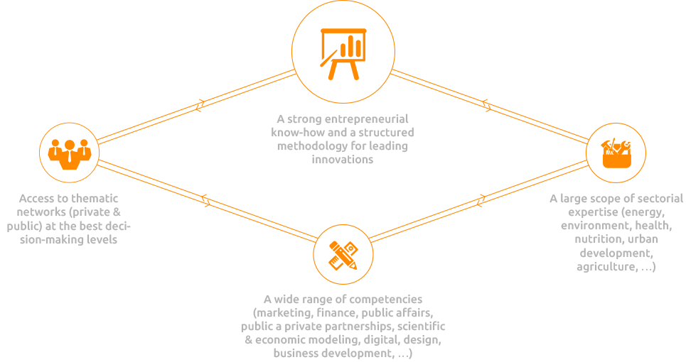

“Yoobaky is an imaginary entrepreneur & researcher, descendant of Nicolas Bourbaky*.
From his origins, he retained the notions of science, collective, structure and assembly.
From his youth, he has a digital sensibility, an entrepreneurial nature, and a strong motivation for novelty.”
Yoobaky Ventures is a group of entrepreneurs with complementary profiles that combines a large scope of expertise, experience, and partners, at the service of concrete, fast and effective realizations.
This collective leads a portfolio of practical projects and can leverage an extensive network of independent “Yoobaky advisors” and a selection of “corporate partners”.
In summary, through its background, skills and experiences, Yoobaky Ventures provides today :
*Nicolas Bourbaki is an imaginary mathematician, under whose name a group of mathematicians, (steered by André Wreil) started to write and edit mathematical texts in the late of 1930s. They published a coherent presentation of mathematics, based on the concept of structure, in a series of books under the name “Eléments de mathématique”.
“Innovation is making the link between the invention and the market.”
Beyond the recurring renewal of products and services, Innovating is providing solutions to social, environmental and economic challenges, in an ongoing changing world and complex systems.
Inventions (models, patents, concepts, simple ideas and decisions, etc…) are abounding. The expectations of the market and the society are multiple, urgent and critical (health, social balance, living environment, education, etc.). To innovate is to integrate the contemporary paradigms, the complexity of ecosystems, and especially overstep the interplay of current actors.
Innovation is to test, to put forward, to achieve further and faster, by taking into account the stakeholders’ expectations and at the same time thinking out of the box.
Yoobaky believes in open innovation, in disruptive business models, in links between stakeholders who do not always understand one another, to foster structural changes of society.
We believe in accelerated execution capabilities, which enable testing both the final users as well as the key stakeholders influencing the market access.
“TO INNOVATE IS TO DESIGN, NETWORK AND DIFFUSE AT THE CROSS ROAD OF THE ECOSYSTEMS.”
The contemporary design can rely on principles of openness, disruption, and instrumented management of the process with respect to the present knowledge.
The Network is the direct link between the Conception and the potential Diffusion on the market.
Above all, the diffusion must rely on a best in class execution of marketing and sales capabilities.
Want to know more
Contact usUndertake in today’s world. Move science and inventions toward society.
Design the new offers and their business models, allowing market adoption and sustainability of the implementation.
In other words, our mission is to put forward, test, execute simple solutions in complex systems.
Lead projects of new services or products, which can take the form of a company, an organization, an activity or a simple application.
Design and build open innovation platforms, to create a boundary structure between producers of science and market operators.
You have a question?
Contact usYou want to innovate?
Contact usYoobaky - 37 rue des Mathurins - 75008 Paris - FRANCE - info@yoobaky.com
© 2016. All rights reserved.